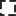

<!doctype html>
<html lang="en">
    <head>
        <meta charset="utf-8">
        <meta http-equiv="X-UA-Compatible" content="IE=edge">
        <meta name="viewport" content="initial-scale=1,user-scalable=no,maximum-scale=1,width=device-width">
        <meta name="mobile-web-app-capable" content="yes">
        <meta name="apple-mobile-web-app-capable" content="yes">

        <link rel="stylesheet" href="https://unpkg.com/leaflet@1.6.0/dist/leaflet.css"><link rel="stylesheet" href="css/L.Control.Locate.min.css">
        <link rel="stylesheet" href="css/qgis2web.css"><link rel="stylesheet" href="css/fontawesome-all.min.css">
        <link rel="stylesheet" href="css/MarkerCluster.css">
        <link rel="stylesheet" href="css/MarkerCluster.Default.css">
        <link rel="stylesheet" href="css/leaflet-control-geocoder.Geocoder.css">
        <link rel="stylesheet" href="css/leaflet-measure.css">

        <link rel="stylesheet" href="slidemenu/L.Control.SlideMenu.css">

        <!-- Se importa el archivo que contiene los estilos-->
        <link rel="stylesheet" href="style.css">

        <style>
        html, body, #map {
            width: 100%;
            height: 100%;
            padding: 0;
            margin: 0;
        }
        </style>
        <title>Taller 3 - 1743023</title>
    </head>
    <body>
        <div id="map">
            </img>
        </div>
        <script src="js/qgis2web_expressions.js"></script>
        <script src="https://unpkg.com/leaflet@1.6.0/dist/leaflet.js"></script><script src="js/L.Control.Locate.min.js"></script>
        <script src="https://unpkg.com/leaflet@1.6.0/dist/leaflet.rotatedMarker.js"></script>
        <script src="https://unpkg.com/leaflet@1.6.0/dist/leaflet.pattern.js"></script>
        <script src="js/leaflet-hash.js"></script>
        <script src="js/Autolinker.min.js"></script>
        <script src="js/rbush.min.js"></script>
        <script src="js/labelgun.min.js"></script>
        <script src="js/labels.js"></script>
        <script src="js/leaflet-control-geocoder.Geocoder.js"></script>
        <script src="js/leaflet-measure.js"></script>
        <script src="js/leaflet.markercluster.js"></script>
        <script src="data/Corregimientos_1.js"></script>
        <script src="data/Comunas_2.js"></script>
        <script src="data/Barrios_3.js"></script>
        <script src="data/JerarquizacinVial_4.js"></script>
        <script src="data/Ros_5.js"></script>
        <script src="data/SitiosdeInters_6.js"></script>

        <!-- Añadir nueva capa en formato GeoJSON-->
        <script src="layers/sitm.js"></script>

        <!-- Añadir escala -->
        <script src="betterscale/L.Control.BetterScale.js"></script>
        <link rel="stylesheet" href="betterscale/L.Control.BetterScale.css" />

        <!-- Añadir MiniMapa-->
        <link rel="stylesheet" href="minimap/Control.MiniMap.css" />
	    <script src="minimap/Control.MiniMap.js" type="text/javascript"></script>

        <!-- Añadir Plugin Actualización Vista-->
        <link rel="stylesheet" href="https://cdnjs.cloudflare.com/ajax/libs/Leaflet.EasyButton/2.4.0/easy-button.css" />
        <script src="https://cdnjs.cloudflare.com/ajax/libs/Leaflet.EasyButton/2.4.0/easy-button.js"></script>

        <!-- Añadir herramientas de medición-->
        <link rel="stylesheet" href="https://leaflet.github.io/Leaflet.draw/src/leaflet.draw.css"/>
	    <script src="https://cdnjs.cloudflare.com/ajax/libs/leaflet.draw/1.0.2/leaflet.draw.js"></script>
        <script src="spin/spin.min.js" charset="utf-8"></script>
	    <script src="spin/leaflet.spin.min.js" charset="utf-8"></script> 

        <!-- Añadir cuadrícula de coordenadas-->
        <script src="graticule/Leaflet.Graticule.js"></script>

        <!-- Añadir espacio para información del plugin-->
        <script src="slidemenu/L.Control.SlideMenu.js"></script>

        <!-- Añadir funciones para añadir Archivos CSV-->
        <scrip src="control_capa_csv.js"></scrip>
        
        <script>     
        
        
        

        var highlightLayer;
        function highlightFeature(e) {
            highlightLayer = e.target;

            if (e.target.feature.geometry.type === 'LineString') {
              highlightLayer.setStyle({
                color: '#ffff00',
              });
            } else {
              highlightLayer.setStyle({
                fillColor: '#ffff00',
                fillOpacity: 1
              });
            }
        }
        var map = L.map('map', {
            zoomControl:true, maxZoom:28, minZoom:1
        })
        var hash = new L.Hash(map);
        map.attributionControl.setPrefix('<a href="https://github.com/tomchadwin/qgis2web" target="_blank">qgis2web</a> &middot; <a href="https://leafletjs.com" title="A JS library for interactive maps">Leaflet</a> &middot; <a href="https://qgis.org">QGIS</a>');
        var autolinker = new Autolinker({truncate: {length: 30, location: 'smart'}});

        // Añadir botón de restauración
        L.easyButton('', function() 
            {
            alert('Se mostrará la VISTA PRINCIPAL del Geovisor.');
            location.reload();
        }).addTo(map);


        // Boton para añadir capa CSV
        var left  = '<h1> <center> Añadir Nueva Capa CSV </center> </h1>';

        // Definir contenido del Slide
        var contents = '<hr>';
        // Mostrar información sobre el plugin
        contents += '<h4><p align="center">Ha habilitado el PLUGIN para añadir una nueva capa a partir de un Archivo CSV. Asegúrese de que su archivo posea LATITUD, LONGITUD, VALOR Z y descripción (opcional).</p></h4>';
		// Añadir botón para descargar plantilla de adición
        contents += '<center><a href="https://drive.google.com/u/0/uc?id=1e3gfk_QDo9GiXCBILYe0EeRLCDTYx-TV&export=download"><button type="button" class = "botones_plugin"> Descargar Plantilla CSV </button></a><center>'
        // Mostrar información acerca de añadir el archivo CSV
        contents += '<br><center><i><b><p>Seleccione el archivo CSV y el nombre de la capa a agregar <br>**** Asegúrese de haber usado la plantilla ****<p></b></i></center>'
        contents += '<p>NOTA: El nombre del archivo se asignará a la Leyenda del Mapa</p>'
            // Se añade opción para seleccionar el archivo CSV (Solo permite seleccionar .csv)
        contents += '<form action="" id="form_subir"><div class="form-1-2"><input type="file" name="archivo" class="botones_plugin2" accept=".csv" required><p></p></div><div class="barra"><div class="barra_azul" id="barra_estado"><span></span></div></div><div class="acciones"> <input type="submit" class="enviar" value="Enviar"><input type="button" class="cancel" id="cancelar" value="Cancelar"></div></form>'

        var slideMenu = L.control.slideMenu('', {width: '30%', height: '450px', delay: '50', icon: 'fa-chevron-right'}).addTo(map);
        slideMenu.setContents(left + contents);


        L.control.locate({locateOptions: {maxZoom: 19}}).addTo(map);
        var measureControl = new L.Control.Measure({
            position: 'topleft',
            primaryLengthUnit: 'meters',
            secondaryLengthUnit: 'kilometers',
            primaryAreaUnit: 'sqmeters',
            secondaryAreaUnit: 'hectares'
        });

        // Popup para conocer las coordenadas del punto donde se haga clic
        var popup = L.popup();

        function onMapClick(e) {
                popup
                    .setLatLng(e.latlng)
                    .setContent('<center> Usted ha dado clic en: </center> <br>' +
                        '<center> <table>\
                    <tr>\
                        <th scope="row">LATITUD    </th>\
                        <td>' + e.latlng.lat + '</td>\
                    </tr>\
                    <tr>\
                        <th scope="row">LONGITUD    </th>\
                        <td>'+ e.latlng.lng + '</td>\
                    </tr>\
                </table> </center>'
                    )
                    .openOn(map);
            }

            map.on('click', onMapClick);

        var Mapa_Base_2 = L.tileLayer('https://{s}.tile.openstreetmap.fr/hot/{z}/{x}/{y}.png', 
            {
                maxZoom: 19,
                attribution: '&copy; <a href="https://www.openstreetmap.org/copyright">OpenStreetMap</a>' 
            });
        


                
        // Añade una capa de un circulo, correspondiente al área de influencia [3.40949872738342, -76.57336149405727]
        var circle = L.circle([3.40949872738342, -76.57336149405727], {
            color: 'red',
            fillColor: '#f03',
            fillOpacity: 0.1,
            radius: 20000,
            zIndex: 9999
        })//.addTo(map);

        circle.bindPopup("<h5> <center> Usted ha dado clic en el ÁREA DE INFLUENCIA <center> </h5>"+ "<center> <h3> <b> CALI ES CALI, LO DEMÁS ES LOMA </b> </h3> </center>" +
        "<center> <i> Cali, oficialmente Distrito Especial, Deportivo, Cultural, Turístico, Empresarial y de Servicios de Santiago de Cali, es un distrito colombiano, capital del departamento de Valle del Cauca, es la tercera ciudad más poblada y el tercer centro económico y cultural de Colombia.  </i> </center>");
        // Se define estilo para mostrar la etiqueta de cada punto

        

        // Se añade capa de planes zonales rurales de la IDESC
        var planes_zonales = L.tileLayer.wms('http://ws-idesc.cali.gov.co/geoserver/pot_2014/wms?service=WMS&version=1.1.0',
            {
            layers: 'pot_2014:nru_planes_zonales_rurales',
            format: 'image/png',
            transparent: true,
            opacity: 1,
            zIndex: 9999
            });
            map.addLayer(planes_zonales);	
        // Se añade capa de planes zonales rurales a la leyenda
        //leyenda.addOverlay(planes_zonales, 'Planes Zonales Rurales');

         // Se añade capa de pendientes de la IDESC
        var pendientes = L.tileLayer.wms('http://ws-idesc.cali.gov.co/geoserver/pot_2014/wms?service=WMS&version=1.1.0',
            {
            layers: 'pot_2014:bcs_pendientes_porcentaje',
            format: 'image/png',
            transparent: true,
            opacity: 0.75
            });
            //map.addLayer(pendientes);	
        // Se añade capa de pendientes a la leyenda
        //leyenda.addOverlay(pendientes, 'Pendientes [%]');
        
        // Se añade capa de red geodésica de la IDESC
        var red_geodesica = L.tileLayer.wms('http://ws-idesc.cali.gov.co/geoserver/idesc/wms?service=WMS&version=1.1.0',
            {
            layers: 'pot_2014:mc_red_control_geodesico',
            format: 'image/png',
            transparent: true,
            opacity: 1,
            zIndex: 9999
            });
            //map.addLayer(red_geodesica);	
        // Se añade capa de red geodésica a la leyenda
        //leyenda.addOverlay(red_geodesica, 'Red Geodésica');
        
        // Se añade capa de suelos de protección agricola rural de la IDESC
        var proteccion_agricola = L.tileLayer.wms('http://ws-idesc.cali.gov.co/geoserver/pot_2014/wms?service=WMS&version=1.1.0',
            {
            layers: 'pot_2014:nru_suelo_proteccion_agricola',
            format: 'image/png',
            transparent: true,
            opacity: 1,
            zIndex: 9999
            });
            //map.addLayer(proteccion_agricola);	
        // Se añade capa de suelos de proyección agricola rural a la leyenda
        //leyenda.addOverlay(proteccion_agricola, 'Suelo de Protección Agrícola Rural');

        // Se añade capa de plantas de tratamiento zonas rurales de la IDESC
        var plantas_tratamiento = L.tileLayer.wms('http://ws-idesc.cali.gov.co/geoserver/pot_2014/wms?service=WMS&version=1.1.0',
            {
            layers: 'pot_2014:spu_ard_ptar_rural',
            format: 'image/png',
            transparent: true,
            opacity: 1,
            zIndex: 9999
            });
            //map.addLayer(plantas_tratamiento);	
        // Se añade capa de plantas de tratamiento zonas rurales a la leyenda
        //leyenda.addOverlay(plantas_tratamiento, 'Plantas Tratamiento Aguas Residuales Rurales');

        // Se añade capa de ecoparqeues de la IDESC
        var ecoparques = L.tileLayer.wms('http://ws-idesc.cali.gov.co:8081/geoserver/wms?service=WMS&version=1.1.0',
            {
            layers: 'pot_2014:amb_eep_aeie_ecoparques',
            format: 'image/png',
            transparent: true,
            opacity: 0.8,
            zIndex: 9999
            });
            //map.addLayer(ecoparques);	
        // Se añade capa de ecoparques a la leyenda
        //leyenda.addOverlay(ecoparques, 'Ecoparques');

        


        measureControl.addTo(map);
        document.getElementsByClassName('leaflet-control-measure-toggle')[0]
        .innerHTML = '';
        document.getElementsByClassName('leaflet-control-measure-toggle')[0]
        .className += ' fas fa-ruler';
        var bounds_group = new L.featureGroup([]);
        function setBounds() {
            if (bounds_group.getLayers().length) {
                map.fitBounds(bounds_group.getBounds());
            }
            map.setMaxBounds(map.getBounds());
        }
        map.createPane('pane_OSMStandard_0');
        map.getPane('pane_OSMStandard_0').style.zIndex = 400;
        var layer_OSMStandard_0 = L.tileLayer('http://tile.openstreetmap.org/{z}/{x}/{y}.png', {
            //pane: 'pane_OSMStandard_0',
            opacity: 1.0,
            attribution: '<a href="https://www.openstreetmap.org/copyright">© OpenStreetMap contributors, CC-BY-SA</a>',
            minZoom: 1,
            maxZoom: 28,
            minNativeZoom: 0,
            maxNativeZoom: 19,
        });
        
        var estilo = 
            {
                radius: 3,
                fillColor: "blue",
                color: "black",
                weight: 1,
                opacity: 1,
                fillOpacity: 1,
                pane: 'pane_SitiosdeInters_6'
            };
        
        var marcador = L.geoJSON(sitm,{onEachFeature:function(feature, layer){
            layer.bindTooltip("<h1>"+feature.properties.nombre+"</h1 >",{permanent: false, className: 'labelstyle', 
        direction:'top', opacity: 1}).openTooltip()
        }, pointToLayer:function(feature, latlng) {return L.circleMarker(latlng, estilo)}})//.addTo(map);

        console.log(marcador);


        layer_OSMStandard_0;
        map.addLayer(layer_OSMStandard_0);
        function pop_Corregimientos_1(feature, layer) {
            layer.on({
                mouseout: function(e) {
                    for (i in e.target._eventParents) {
                        e.target._eventParents[i].resetStyle(e.target);
                    }
                },
                //mouseover: highlightFeature,
            });
            var popupContent = '<table>\
                    <tr>\
                        <th scope="row">CORREGIMIENTO</th>\
                        <td>' + (feature.properties['CORREGIMIE'] !== null ? autolinker.link(feature.properties['CORREGIMIE'].toLocaleString()) : '') + '</td>\
                    </tr>\
                    <tr>\
                        <th scope="row">ACUERDO</th>\
                        <td>' + (feature.properties['ACUERDO'] !== null ? autolinker.link(feature.properties['ACUERDO'].toLocaleString()) : '') + '</td>\
                    </tr>\
                    <tr>\
                        <th scope="row">ÁREA</th>\
                        <td>' + (feature.properties['ÁREA'] !== null ? autolinker.link(feature.properties['ÁREA'].toLocaleString()) : '') + ' Ha' + '</td>\
                    </tr>\
                    <tr>\
                        <th scope="row">PÉRIMETRO</th>\
                        <td>' + (feature.properties['PÉRIMETRO'] !== null ? autolinker.link(feature.properties['PÉRIMETRO'].toLocaleString()) : '') + ' Km' + '</td>\
                    </tr>\
                </table>';
            layer.bindPopup(popupContent, {maxHeight: 400});
        }

        function style_Corregimientos_1_0() {
            return {
                pane: 'pane_Corregimientos_1',
                opacity: 1,
                color: 'rgba(35,35,35,1.0)',
                dashArray: '',
                lineCap: 'butt',
                lineJoin: 'miter',
                weight: 1.0, 
                fill: true,
                fillOpacity: 1,
                fillColor: 'rgba(113,143,126,0.1)',
                interactive: true,
            }
        }
        map.createPane('pane_Corregimientos_1');
        map.getPane('pane_Corregimientos_1').style.zIndex = 401;
        map.getPane('pane_Corregimientos_1').style['mix-blend-mode'] = 'normal';
        var layer_Corregimientos_1 = new L.geoJson(json_Corregimientos_1, {
            attribution: '',
            interactive: true,
            dataVar: 'json_Corregimientos_1',
            layerName: 'layer_Corregimientos_1',
            pane: 'pane_Corregimientos_1',
            onEachFeature: pop_Corregimientos_1,
            style: style_Corregimientos_1_0,
        });
        bounds_group.addLayer(layer_Corregimientos_1);
        map.addLayer(layer_Corregimientos_1);
        function pop_Comunas_2(feature, layer) {
            layer.on({
                mouseout: function(e) {
                    for (i in e.target._eventParents) {
                        e.target._eventParents[i].resetStyle(e.target);
                    }
                },
                //mouseover: highlightFeature,
            });
            var popupContent = '<table>\
                    <tr>\
                        <th scope="row">COMUNA</th>\
                        <td>' + (feature.properties['COMUNA'] !== null ? autolinker.link(feature.properties['COMUNA'].toLocaleString()) : '') + '</td>\
                    </tr>\
                    <tr>\
                        <th scope="row">NOMBRE</th>\
                        <td>' + (feature.properties['NOMBRE'] !== null ? autolinker.link(feature.properties['NOMBRE'].toLocaleString()) : '') + '</td>\
                    </tr>\
                    <tr>\
                        <th scope="row">ÁREA</th>\
                        <td>' + (feature.properties['ÁREA'] !== null ? autolinker.link(feature.properties['ÁREA'].toLocaleString()) : '') + ' Ha' + '</td>\
                    </tr>\
                    <tr>\
                        <th scope="row">PERÍMETRO</th>\
                        <td>' + (feature.properties['PERÍMETRO'] !== null ? autolinker.link(feature.properties['PERÍMETRO'].toLocaleString()) : '') + ' Km' + '</td>\
                    </tr>\
                </table>';
            layer.bindPopup(popupContent, {maxHeight: 400});
        }

        function style_Comunas_2_0() {
            return {
                pane: 'pane_Comunas_2',
                opacity: 1,
                color: 'rgba(35,35,35,1.0)',
                dashArray: '1,5',
                lineCap: 'butt',
                lineJoin: 'miter',
                weight: 4.0, 
                fillOpacity: 0,
                interactive: true,
            }
        }
        map.createPane('pane_Comunas_2');
        map.getPane('pane_Comunas_2').style.zIndex = 402;
        map.getPane('pane_Comunas_2').style['mix-blend-mode'] = 'normal';
        var layer_Comunas_2 = new L.geoJson(json_Comunas_2, {
            attribution: '',
            interactive: true,
            dataVar: 'json_Comunas_2',
            layerName: 'layer_Comunas_2',
            pane: 'pane_Comunas_2',
            onEachFeature: pop_Comunas_2,
            style: style_Comunas_2_0,
        });
        bounds_group.addLayer(layer_Comunas_2);
        map.addLayer(layer_Comunas_2);
        function pop_Barrios_3(feature, layer) {
            layer.on({
                mouseout: function(e) {
                    for (i in e.target._eventParents) {
                        e.target._eventParents[i].resetStyle(e.target);
                    }
                },
                //mouseover: highlightFeature,
            });
            var popupContent = '<table>\
                    <tr>\
                        <th scope="row">BARRIO</th>\
                        <td>' + (feature.properties['BARRIO'] !== null ? autolinker.link(feature.properties['BARRIO'].toLocaleString()) : '') + '</td>\
                    </tr>\
                    <tr>\
                        <th scope="row">COMUNA</th>\
                        <td>' + (feature.properties['COMUNA'] !== null ? autolinker.link(feature.properties['COMUNA'].toLocaleString()) : '') + '</td>\
                    </tr>\
                    <tr>\
                        <th scope="row">ESTRATO MODA</th>\
                        <td>' + (feature.properties['ESTRA_MODA'] !== null ? autolinker.link(feature.properties['ESTRA_MODA'].toLocaleString()) : '') + '</td>\
                    </tr>\
                    <tr>\
                        <th scope="row">ÁREA</th>\
                        <td>' + (feature.properties['ÁREA'] !== null ? autolinker.link(feature.properties['ÁREA'].toLocaleString()) : '') + ' Ha' + '</td>\
                    </tr>\
                    <tr>\
                        <th scope="row">PERÍMETRO</th>\
                        <td>' + (feature.properties['PERÍMETRO'] !== null ? autolinker.link(feature.properties['PERÍMETRO'].toLocaleString()) : '') + ' Km' + '</td>\
                    </tr>\
                </table>';
            layer.bindPopup(popupContent, {maxHeight: 400});
        }

        function style_Barrios_3_0() {
            return {
                pane: 'pane_Barrios_3',
                opacity: 1,
                color: 'rgba(35,35,35,1.0)',
                dashArray: '',
                lineCap: 'butt',
                lineJoin: 'miter',
                weight: 1.0, 
                fill: true,
                fillOpacity: 1,
                fillColor: 'rgba(10,169,15,0.1)',
                interactive: true,
            }
        }
        map.createPane('pane_Barrios_3');
        map.getPane('pane_Barrios_3').style.zIndex = 403;
        map.getPane('pane_Barrios_3').style['mix-blend-mode'] = 'normal';
        var layer_Barrios_3 = new L.geoJson(json_Barrios_3, {
            attribution: '',
            interactive: true,
            dataVar: 'json_Barrios_3',
            layerName: 'layer_Barrios_3',
            pane: 'pane_Barrios_3',
            onEachFeature: pop_Barrios_3,
            style: style_Barrios_3_0,
        });
        bounds_group.addLayer(layer_Barrios_3);
        map.addLayer(layer_Barrios_3);
        function pop_JerarquizacinVial_4(feature, layer) {
            layer.on({
                mouseout: function(e) {
                    for (i in e.target._eventParents) {
                        e.target._eventParents[i].resetStyle(e.target);
                    }
                },
                //mouseover: highlightFeature,
            });
            var popupContent = '<table>\
                    <tr>\
                        <th scope="row">NOMBRE</th>\
                        <td>' + (feature.properties['NOMBRE'] !== null ? autolinker.link(feature.properties['NOMBRE'].toLocaleString()) : '') + '</td>\
                    </tr>\
                    <tr>\
                        <th scope="row">ESTADO</th>\
                        <td>' + (feature.properties['ESTADO'] !== null ? autolinker.link(feature.properties['ESTADO'].toLocaleString()) : '') + '</td>\
                    </tr>\
                    <tr>\
                        <th scope="row">TIPO</th>\
                        <td>' + (feature.properties['TIPO'] !== null ? autolinker.link(feature.properties['TIPO'].toLocaleString()) : '') + '</td>\
                    </tr>\
                    <tr>\
                        <th scope="row">LONGITUD</th>\
                        <td>' + (feature.properties['LONGITUD'] !== null ? autolinker.link(feature.properties['LONGITUD'].toLocaleString()) : '') + ' Km' + '</td>\
                    </tr>\
                </table>';
            layer.bindPopup(popupContent, {maxHeight: 400});
        }

        function style_JerarquizacinVial_4_0() {
            return {
                pane: 'pane_JerarquizacinVial_4',
                opacity: 1,
                color: 'rgba(98,105,56,1.0)',
                dashArray: '',
                lineCap: 'square',
                lineJoin: 'bevel',
                weight: 1.0,
                fillOpacity: 0,
                interactive: true,
            }
        }
        map.createPane('pane_JerarquizacinVial_4');
        map.getPane('pane_JerarquizacinVial_4').style.zIndex = 404;
        map.getPane('pane_JerarquizacinVial_4').style['mix-blend-mode'] = 'normal';
        var layer_JerarquizacinVial_4 = new L.geoJson(json_JerarquizacinVial_4, {
            attribution: '',
            interactive: true,
            dataVar: 'json_JerarquizacinVial_4',
            layerName: 'layer_JerarquizacinVial_4',
            pane: 'pane_JerarquizacinVial_4',
            onEachFeature: pop_JerarquizacinVial_4,
            style: style_JerarquizacinVial_4_0,
        });
        bounds_group.addLayer(layer_JerarquizacinVial_4);
        //map.addLayer(layer_JerarquizacinVial_4);
        function pop_Ros_5(feature, layer) {
            layer.on({
                mouseout: function(e) {
                    for (i in e.target._eventParents) {
                        e.target._eventParents[i].resetStyle(e.target);
                    }
                },
                mouseover: highlightFeature,
            });
            var popupContent = '<table>\
                    <tr>\
                        <th scope="row">NOMBRE</th>\
                        <td>' + (feature.properties['NOMBRE'] !== null ? autolinker.link(feature.properties['NOMBRE'].toLocaleString()) : '') + '</td>\
                    </tr>\
                    <tr>\
                        <th scope="row">ÁREA</th>\
                        <td>' + (feature.properties['ÁREA'] !== null ? autolinker.link(feature.properties['ÁREA'].toLocaleString()) : '') + 'Ha' + '</td>\
                    </tr>\
                    <tr>\
                        <th scope="row">PERÍMETRO</th>\
                        <td>' + (feature.properties['PERÍMETRO'] !== null ? autolinker.link(feature.properties['PERÍMETRO'].toLocaleString()) : '') + 'Km' + '</td>\
                    </tr>\
                </table>';
            layer.bindPopup(popupContent, {maxHeight: 400});
        }

        function style_Ros_5_0() {
            return {
                pane: 'pane_Ros_5',
                opacity: 1,
                color: 'rgba(40,59,225,1.0)',
                dashArray: '',
                lineCap: 'butt',
                lineJoin: 'miter',
                weight: 1.0, 
                fill: true,
                fillOpacity: 1,
                fillColor: 'rgba(40,59,225,1.0)',
                interactive: true,
            }
        }
        map.createPane('pane_Ros_5');
        map.getPane('pane_Ros_5').style.zIndex = 405;
        map.getPane('pane_Ros_5').style['mix-blend-mode'] = 'normal';
        var layer_Ros_5 = new L.geoJson(json_Ros_5, {
            attribution: '',
            interactive: true,
            dataVar: 'json_Ros_5',
            layerName: 'layer_Ros_5',
            pane: 'pane_Ros_5',
            onEachFeature: pop_Ros_5,
            style: style_Ros_5_0,
        });
        bounds_group.addLayer(layer_Ros_5);
        map.addLayer(layer_Ros_5);


        

 
        function pop_SitiosdeInters_6(feature, layer) {
            layer.on({
                mouseout: function(e) {
                    for (i in e.target._eventParents) {
                        e.target._eventParents[i].resetStyle(e.target);
                    }
                },
                //mouseover: highlightFeature,
            });
            var popupContent = '<table>\
                    <tr>\
                        <th scope="row">NOMBRE</th>\
                        <td>' + (feature.properties['NOMBRE'] !== null ? autolinker.link(feature.properties['NOMBRE'].toLocaleString()) : '') + '</td>\
                    </tr>\
                    <tr>\
                        <th scope="row">UBICACIÓN</th>\
                        <td>' + (feature.properties['UBICACION'] !== null ? autolinker.link(feature.properties['UBICACION'].toLocaleString()) : '') + '</td>\
                    </tr>\
                    <tr>\
                        <th scope="row">TIPO</th>\
                        <td>' + (feature.properties['TIPO'] !== null ? autolinker.link(feature.properties['TIPO'].toLocaleString()) : '') + '</td>\
                    </tr>\
                    <tr>\
                        <th scope="row">BARRIO</th>\
                        <td>' + (feature.properties['BARRIO'] !== null ? autolinker.link(feature.properties['BARRIO'].toLocaleString()) : '') + '</td>\
                    </tr>\
                    <tr>\
                        <th scope="row">COMUNA</th>\
                        <td>' + (feature.properties['COMUNA'] !== null ? autolinker.link(feature.properties['COMUNA'].toLocaleString()) : '') + '</td>\
                    </tr>\
                </table>';
            layer.bindPopup(popupContent, {maxHeight: 400});
        }

        function style_SitiosdeInters_6_0() {
            return {
                pane: 'pane_SitiosdeInters_6',
                radius: 4.0,
                opacity: 1,
                color: 'rgba(255,255,255,1.0)',
                dashArray: '',
                lineCap: 'butt',
                lineJoin: 'miter',
                weight: 2.0,
                fill: true,
                fillOpacity: 1,
                fillColor: 'rgba(0,0,0,1.0)',
                interactive: true,
            }
        }
        map.createPane('pane_SitiosdeInters_6');
        map.getPane('pane_SitiosdeInters_6').style.zIndex = 406;
        map.getPane('pane_SitiosdeInters_6').style['mix-blend-mode'] = 'normal';
        var layer_SitiosdeInters_6 = new L.geoJson(json_SitiosdeInters_6, {
            attribution: '',
            interactive: true,
            dataVar: 'json_SitiosdeInters_6',
            layerName: 'layer_SitiosdeInters_6',
            pane: 'pane_SitiosdeInters_6',
            onEachFeature: pop_SitiosdeInters_6,
            pointToLayer: function (feature, latlng) {
                var context = {
                    feature: feature,
                    variables: {}
                };
                return L.circleMarker(latlng, style_SitiosdeInters_6_0(feature));
            },
        });
        var cluster_SitiosdeInters_6 = new L.MarkerClusterGroup({showCoverageOnHover: false,
            spiderfyDistanceMultiplier: 2});
        cluster_SitiosdeInters_6.addLayer(layer_SitiosdeInters_6);

        bounds_group.addLayer(layer_SitiosdeInters_6);
        cluster_SitiosdeInters_6.addTo(map);

        


        var title = new L.Control();
            title.onAdd = function (map) {
                this._div = L.DomUtil.create('div', 'info');
                this.update();
                return this._div;
            };
            title.update = function () {
                this._div.innerHTML = '<h2>GEOVISOR TALLER 3: SIG-WEB</h2>';
            };
            title.addTo(map);
            var abstract = new L.Control({'position':'bottomright'});
            abstract.onAdd = function (map) {
                this._div = L.DomUtil.create('div',
                'leaflet-control abstract');
                this._div.id = 'abstract'

                    abstract.show();
                    return this._div;
                };
                abstract.show = function () {
                    this._div.classList.remove("abstract");
                    this._div.classList.add("abstractUncollapsed");
                    this._div.innerHTML = 'Escobar-Cardona, A.J.<br />CÓDIGO: 1743023<br />Ingeniería Topográfica<br />';
            };
            abstract.addTo(map);
        var osmGeocoder = new L.Control.Geocoder({
            collapsed: true,
            position: 'topleft',
            text: 'Search',
            title: 'Testing'
        }).addTo(map);
        document.getElementsByClassName('leaflet-control-geocoder-icon')[0]
        .className += ' fa fa-search';
        document.getElementsByClassName('leaflet-control-geocoder-icon')[0]
        .title += 'Geocodificación';

        var baseMaps = {};
        L.control.layers(baseMaps,{' QGIS2WEB: Sitios de Interés': cluster_SitiosdeInters_6,
        ' QGIS2WEB: Ríos': layer_Ros_5,
        ' QGIS2WEB: Jerarquización Vial': layer_JerarquizacinVial_4,
        ' QGIS2WEB: Barrios': layer_Barrios_3,
        ' QGIS2WEB: Comunas': layer_Comunas_2,
        ' QGIS2WEB: Corregimientos': layer_Corregimientos_1,
        ' DIBUJADA: Área de influencia': circle,
        "Mapa Base 1: OSM Standard Type 1": layer_OSMStandard_0,
        "Mapa Base 2: OSM Standard Type 2": Mapa_Base_2,
        "IDESC: Planes Zonales ": planes_zonales,
        "IDESC: Pendientes [%]": pendientes,
        "IDESC: Red Geodésica": red_geodesica,
        "IDESC: Suelos de Protección Agrícola": proteccion_agricola,
        "IDESC: PTAR Zona Rural": plantas_tratamiento,
        "IDESC: Ecoparques": ecoparques,
        "GeoJSON: Estaciones SITM": marcador,}).addTo(map);
        
        setBounds();
        var i = 0;
        layer_Corregimientos_1.eachLayer(function(layer) {
            var context = {
                feature: layer.feature,
                variables: {}
            };
            layer.bindTooltip((layer.feature.properties['CORREGIMIE'] !== null?String('<div style="color: #000000; font-size: 10pt; font-family: \'Monotype Corsiva\', sans-serif;">' + layer.feature.properties['CORREGIMIE']) + '</div>':''), {permanent: true, offset: [-0, -16], className: 'css_Corregimientos_1'});
            labels.push(layer);
            totalMarkers += 1;
              layer.added = true;
              addLabel(layer, i);
              i++;
        });
        resetLabels([layer_Corregimientos_1]);
        map.on("zoomend", function(){
            resetLabels([layer_Corregimientos_1]);
        });
        map.on("layeradd", function(){
            resetLabels([layer_Corregimientos_1]);
        });
        map.on("layerremove", function(){
            resetLabels([layer_Corregimientos_1]);
        });


 
        // Se añade escala gráfica
        L.control.betterscale({position:'bottomleft'}).addTo(map);

        // Se añade escala numérica
        L.control.scale({position:'bottomleft'}).addTo(map);

        

        
        
        L.latlngGraticule({
			showLabel: true,
			opacity:1,
            weight: 0.4,
			color: 'black',
			zoomInterval: [
				{start: 1, end: 28, interval: 0.25}
			]
		}).addTo(map);


        

        // Se añade MiniMapa

        var osmUrl='http://{s}.tile.openstreetmap.org/{z}/{x}/{y}.png';
	    var osmAttrib='Map data &copy; OpenStreetMap contributors';

        var osm2 = new L.TileLayer(osmUrl, {minZoom: 0, maxZoom: 8, attribution: osmAttrib });
		var miniMap2 = new L.Control.MiniMap(osm2, { toggleDisplay: true, minimized: true }).addTo(map);

        

        // Añadir herramientas de medición
        var drawnItems = new L.FeatureGroup();

			var drawControl = new L.Control.Draw({
				position: 'topleft',
				edit: {
					featureGroup: drawnItems,
					remove: true,
					edit: false,
				},
				draw: {
					circlemarker: true,
					circle:true,
					rectangle:false,
					marker:false,
				}
			});
			map.addControl(drawControl);
			
        map.on(L.Draw.Event.CREATED, function (e) {
                    var type = e.layerType,
                        layer = e.layer;

                    if (type === 'marker') {
                        layer.bindPopup('A popup!');
                    }

                    drawnItems.addLayer(layer);
                    map.addLayer(drawnItems);
                });
        
        

        // Añadir botón de nueva CAPA en FORMATO CSV
        /*L.easyButton('', function() 
            {
            alert('Ha habilitado el PLUGIN para añadir una nueva capa a partir de un Archivo CSV. Asegúrese de que su archivo posea LATITUD, LONGITUD, VALOR Z y descripción (opcional). IMPORTANTE: Haga uso del formato que se descargará de forma AUTOMÁTICA.');
            window.location.href = 'https://drive.google.com/u/0/uc?id=1e3gfk_QDo9GiXCBILYe0EeRLCDTYx-TV&export=download';
        }).addTo(map);
        */
        
        
        </script>
    </body>
</html>
